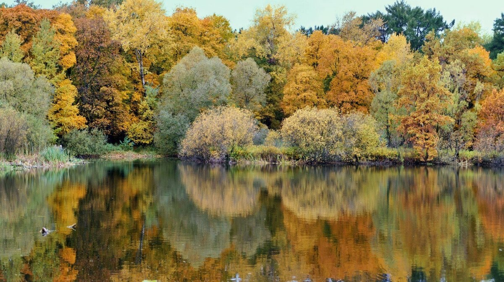
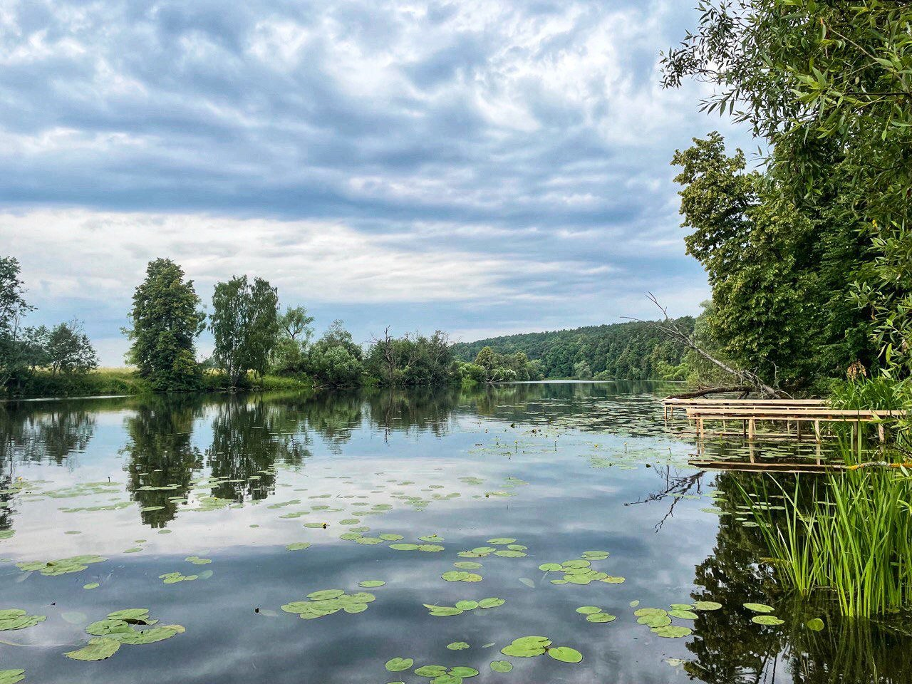
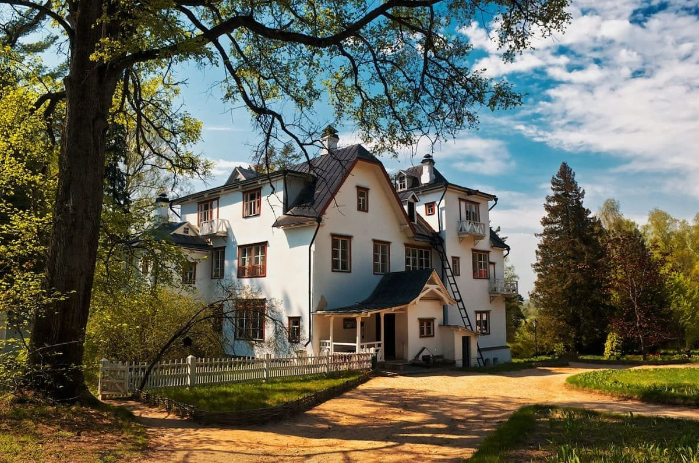

Сканди-мероприятия
-

Scandi-прогулка и экскурсия по Воробьёвым горам и Бот.саду МГУ
18 мая 2024г 10:00
Воробьёвы горы – по праву считаются одним из красивейших мест Москвы. Помимо смотровых площадок это место стало оплотом российской науки. Университетский кампус - настоящий “город в городе”.
Вместе с агроэкологом Антоном Гладилиным мы совершим погружение в “секреты Воробьёвых гор”. Как возникла эта местность, В чем ее геологические особенности? Что здесь находилось до постройки университета? Как менялся проект главного здания, и как происходило его строительство? Также мы будем искать интересные детали и разберем некоторые мифы.
Во время прогулки по традиции уделим внимание определению дикорастущей флоры. А в завершение маршрута попадем на закрытую территорию ботанического сада биологического факультета МГУ, где на площади в 9 га собраны около 2000 видов травянистой флоры. В саду произрастают лучшие отечественные и зарубежные сорта плодовых и ягодных растений, часть которых выведена сотрудниками сада. А коллекция сирени является одной из крупнейших в России (130 сортов).
Мы полюбуемся видами главного здания в обрамлении цветущей сирени и познакомимся с коллекций ботанического сада!
До встречи же с нашим экскурсоводом, мы активно позанимаемся скандинавской ходьбой. А именно: пройдем круговой маршрут по Воробьевым горам, во время которого отработаем технику скандинавского шага и сделаем различные упражнения.
По уже сложившейся традиции, по вашему желанию, вы можете принять участие только в прогулке, только в экскурсии или совместить Scandi-прогулку и экскурсию и провести невероятно насыщенный день на природе. Перед посещением Бот.сада мы обязательно пообедаем в кафе (оплачивается самостоятельно).
Инструктор: Елена Краснова
Экскурсовод: Антон Гладилин
Протяженность и продолжительность маршрута:
Scandi-прогулка – ок.5 км и ок.2 ч
Scandi-прогулка+экскурсия – ок.8 км от 6 ч
Стоимость:
Scandi-прогулка: 1100 р
Экскурсия: 1600 р
Scandi-прогулка+экскурсия: 2400р
ЗаписатьсяПодробнее -

Царственные жены Измайловского острова. Scandi-прогулка-тренировка и экскурсия
26 мая 2024г 9:30
"Женщина – это волшебство, которое никогда не иссякнет". Фёдор Тютчев
Друзья, ну, куда же наш мир без женщин! Приглашаем спортивно и интересно провести выходной в бывшей царской резиденции. И не где-нибудь. А на единственном в Москве рукотворном острове!
Отправляемся на сканди-прогулку-тренировку в парк Измайлово. После прогулки посетим с экскурсией выставку "Царственные жены на Измайловском острове".
Во время прогулки позанимаемся скандинавской ходьбой, отработаем технику шага и различные упражнения. Мы с вами пройдем 5-7 км, полюбуемся природой и подышим свежим лесным воздухом. После прогулки пообедаем и отправимся на экскурсию в музей.
Когда: 26 мая 2024г, в 9:30
Отправляемся от ст. МЦК Соколиная гора
Начало экскурсии в 14:00
Заканчиваем ок.15:30 в Усадьбе Измайлово
Вы можете посетить сканди-прогулку, экскурсию, прогулку+экскурсию.
Инструктор: Краснова Елена.
Экскурсовод музея
При регистрации в Примечании укажите, пожалуйста, в какой программе вы хотите принять участие.
После регистрации вы получите информационное письмо с подробностями места и времени встречи, а также внесения предоплаты.
Стоимость:
1500р - Scandi-прогулка
500р/400р (полный/льготный билет) - экскурсия в Усадьбе Измайлово
1900р/1800р - полная программа - прогулка+экскурсия по выставке
Включено: экскурсионно-спортивное сопровождение
ЗаписатьсяПодробнее -

SCANDI-поход по «Зеленому кольцу Москвы». Часть 4.
1 июня 2024г 10:00
Зелёное кольцо Москвы - это пешеходный маршрут протяжённостью 160 километров, который проходит по паркам и зелёным зонам с минимальными переходами по городским улицам и опоясывает таким образом Москву.
На пути встречается множество достопримечательностей — есть возможность увидеть не просто зеленые парки, но и самые красивые виды города, исторические места и много интересных и неизвестных памятников столицы.
Маршрут подходит как для семейных прогулок, так и для тренировок спортсменов в беге, маунтинбайке, скандинавской ходьбе. Зимой — для занятий лыжами.
Автор маршрута Александр Советов.
На этом этапе пройдём участок м.Измайловская – м.Ботанический сад
✅Увидим парки:
• Измайловский остров
• Черкизовский пруд
• Лосиноостровский парк
• Парк «Акведук»
• Парк спорта Яуза
• Сад Будующего
Участок протяжённостью около 20 км
✅Нас ждёт :
• Сканди-разминка
• Дыхательная гимнастика
• Поход с наслаждением и любовью
• Дружеские кофе/чайные паузы
• Растяжка в конце маршрута
Длительность около 8 часов
Участок можно пройти не полностью. Будет возможность свернуть с маршрута в районе метро Черкизовская, Бульвар Рокосовского и ж/д станции Белокаменная
📍Одежда и обувь спортивная по погоде.
📍Скандинавские палки берем с собой и улыбку тоже.
📍Термосы с чаем и перекусы приветствуются.
Вся организационная информация будет в телеграмм-чате
Инструктор Волосюк Маргарита
Стоимость: 1000р
ЗаписатьсяПодробнее -

Дорога в Лавру, часть 8. Радонеж - Сергиев Посад
8 июня 2024г 8:00
Друзья, мы продолжаем наш маршрут из Москвы в Троице-Сергиеву Лавру. На этот раз пойдем очередной, восьмой, отрезок пути. Вся дорога составляет 120 км. Мы разделили её на несколько этапов. В этот раз маршрут около 23 км.
Для тех, кто только думает впервые к нам присоединиться, хочу заметить, что идти с нами вы можете любой этап. Каждый последующий этап начинается точно в том месте, где закончился предыдущий. По дороге мы ставим печати в Подорожную грамоту, и в какой последовательности эти печати у вас появятся не имеет значения. Мы обязательно пойдём маршрут ещё, но пока не известно когда. Скорее всего сезон будет точно другой. А это значит, совершенно другие впечатления.
Сергий Радонежский – один из самых почитаемых святых на Руси. А с конца XIV в., основанный им, Троицкий монастырь стал центром притяжения. Совершать паломничество в Троицкую обитель стало традицией, как у простого люда, так и у знатного. Причем проделать путь до монастыря надо было обязательно пешком.
Пойдем от городища Радонеж до Сергиева Посада.
В Радонеже позавтракаем. Ещё раз полюбуемся долиной речки Пажи, заглянем в Преображенскую церковь и отправимся в путь.
Тропинка живописная, со спусками и подъемами, через леса и поля. Далее, на берегу, озера, мы устроим небольшой пикник, поэтому прихватите с собой теплое питье и перекус.
Во время прогулки сделаем разминку, суставную, дыхательную и нейрогимнастику, упражнения на различные группы мышц и технику скандинавского шага, в завершении обязательная растяжка. В Сергиевом Посаде поедим после долгой дороги
Одежда удобная, спортивная по погоде. Скандинавские палки с собой.
И самое главное – обязательно возьмите с собой хорошее настроение!
Идем в субботу, 8 июня 2024 г.. от городища Радонеж.
Встречаемся на Автостанции ВДНХ в 8:00-8:10. Автобус отправляется в 8:20.
Возвращаемся на электричке от ст.Сергиев Посад.
Протяженность всего маршрута: ок.23 км.
Продолжительность: весь день (от 7 часов)
Инструктор: Елена Краснова
Включено: тренировка и сопровождение на маршруте.
Самостоятельно оплачивается проезд на автобусе и электричке, завтрак в Радонеже, обед (или ужин) в Сергиевом Посаде.
После регистрации Вы получите информационное письмо с подробной информацией по времени и месту встречи.
Стоимость: 1700р
ЗаписатьсяПодробнее -

SCANDI-ПОХОД «Заповедник Лохин остров – Усадьба Архангельское»
22 июня 2024г 8:30
Маршрут: пл. Барвиха — с. Ильинское — заповедник «Лохин остров» — ост. «деревня Глухово» или продолжение маршрута до усадьбы «Архангельское»
Маршрут проходит по грунтовыми полевым дорожкам вдоль Москвы-реки.
На треке есть две достопримечательности — природная и историческая.
Заповедник «Лохин остров» — это остров редких растений для Подмосковья. Прогуляемся по южно-таёжному сосновому бору, вязово-липовой дубраве, вдоль белого мха и реликтового озера «Глухая яма», а потом пообедаем под старой сосной на берегу реки. Заповедник находится на острове, который образовали русло Москвы-реки и её старица. Мы попадём на остров через мостик.
Оставим силы на музей-усадьбу «Архангельское» — из природной сказки погрузимся в атмосферу XVIII века. Территория музея — это ухоженные аллеи, дворцы, скульптуры, колоннады, храмы и даже театр. Посмотрим, как жили князья и где они размещали гостей, изучим художественные коллекции, а потом сходим на смотровую площадку с панорамой «Лохина острова».
Ланчбоксы на обед и чай в термосе берем с собой, но при желании можно будет что-то купить в магазине в селе Ильинское.
Стартуем от Белорусского вокзала на электричке в 8.29 до платформы Барвиха (желающие могут подсесть на электричку по пути). Прибываем на станцию Барвиха в 9.02.
В обратном направлении едем на автобусе от остановки «село Глухово» (для тех, кто не хочет посещать усадьбу) или от остановки «Архангельское» до метро Тушинская (ориентировочно 40 минут пути).
Километраж от точки старта до села Глухово 18 км
До усадьбы Архангельское 21 км
Ориентировочная продолжительность пешеходной части 8 часов (без учета транспорта).
Одежда спортивная по погоде. Скандинавские палки берем с собой. Все необходимые рекомендации будут в организационном чате.
По пути остановки на разминку, упражнения, дыхательную гимнастику.
В стоимость не входят входные билеты в музей-заповедник «Архангельское»
Стоимость: 1300р
ЗаписатьсяПодробнее -

SCANDI-ПОХОД «Усадьба Поленово – пещера Улая» (Тульская область)
6 июля 2024г 7:00
В этот день мы совершим с вами удивительную прогулку по тульским окрестностям и увидим собственными глазами, почему художники выбирали для жизни только самые живописные места. Прогуляемся по красивому парку музея-усадьбы «Поленово», где жил и творил известный художник В. Д. Поленов.
Вдоль живописного берега реки Оки дойдем до деревни Бёхово, к месту захоронения мастера. Постараемся посетить выставочные пространства «Фахверк» и «Аббатство» (входные билеты оплачиваются дополнительно).
Маршрут Поленово – Бехово – Поленово растянулся на 3,5 км, не включая неспешную прогулку по парку. При хорошей погоде будет возможность устроить привал на берегу Оки, искупаться, перекусить, наслаждаясь прекрасными видами вокруг. На территории музея-усадьбы есть кафе, но поездка дальняя, поэтому сухой паек и термос с собой приветствуются.
Вторая часть похода будет состоять из прогулки до пещеры Улая по лесистому берегу реки Оки. Длина этого маршрута примерно 11 км.
Ориентировочная продолжительность всего похода без трансфера — 8-9 часов, неспеша и с остановками на отдых и купание. Мы пользуемся летним большим световым днем.
Так как у нас походный формат прогулки, гулять по усадьбе мы будем самостоятельно без экскурсовода. Но у нас будет возможность прослушать аудиогид.
Конечно, будут неутомительные сканди-разминки и растяжка.
— Что берем с собой?!
Вся информация дополнительно будет в организационном чате.
— Как добираемся?!
Для тех, кто поедет на общественном транспорте.
Едем на электричке от Курского вокзала в 7:09, прибытие на станцию Тарусская в 9:29. Далее берем такси и едем до усадьбы «Поленово».
Обратно возвращаемся также на такси до станции Тарусская. Отправление электрички в 20:50. Прибытие на Курский вокзал в 23:07.
Есть возможность разнообразить наш путь домой: прокатиться на катере до города Таруса. Дальше отправиться на такси до Серпухова, а оттуда в Москву на электричке. Все зависит от нашего желания, возможностей и некоторой доли авантюризма.
Для автомобилистов.
Доезжаете на своем авто до ворот музея-усадьбы Поленово. Стоянка там есть, но стоит помнить, что это выходной день, людей будет много. Учитывайте это. Встреча с остальной группой ориентировочно в 10.00 у туристического центра.
В стоимость входит: сопровождение инструктора по скандинавской ходьбе, походная аптечка.
В стоимость НЕ входит: весь трансфер до места и обратно, питание, входные билеты в музей-усадьбу.
Инструктор Волосюк Маргарита
Стоимость: 1500р
ЗаписатьсяПодробнее